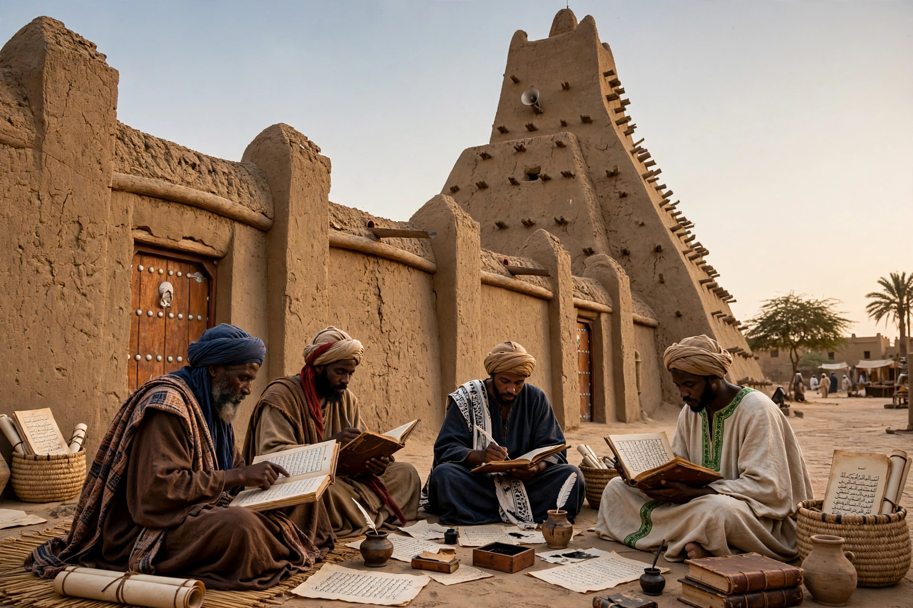

Higher education in Africa
Higher education in Africa encompasses universities, polytechnics, colleges and technical institutes across the continent, ranging from medieval centres of learning to rapidly expanding modern university systems.

History
Africa's higher-education tradition predates European colonisation: the University of al-Qarawiyyin in Fez (founded 859) and the scholarly communities of Timbuktu are among the world's oldest continuous centres of learning. The colonial era produced institutions such as the University of South Africa (1873), Fourah Bay College (1827, Sierra Leone) and Makerere (1922, Uganda). Independence movements of the 1960s spurred a wave of national universities, including short-lived federal experiments such as the University of East Africa (1963–1970).
Contemporary landscape
Enrolment has grown dramatically since 2000, with private universities expanding alongside public ones. Persistent challenges include underfunding, graduate unemployment, brain drain of academics, and uneven quality assurance. Regional bodies such as the Association of African Universities and initiatives like the African Centres of Excellence programme support research capacity.